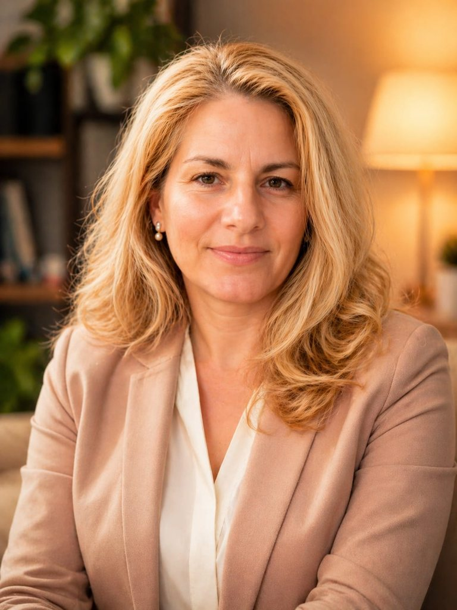

Psihoterapie individuală CBT & DBT
Pentru copii, adolescenți și adulți. Planul este adaptat dificultăților, vârstei și obiectivelor stabilite după evaluare.
DetaliiPsihologie în Suceava și online
Sunt Nicoleta Amihăesi. Ofer psihoterapie individuală CBT și DBT pentru copii, adolescenți și adulți, precum și psihoterapie de cuplu și de familie.
Ședințe online și fizic în Suceava · discuții confidențiale

Despre abordare
Fiecare proces începe cu o conversație sinceră despre ce trăiești acum și despre ce ai vrea să fie diferit.
În intervenția psihologică, obiectivele sunt construite împreună, explicate clar și ajustate pe parcurs. Pentru copii, colaborarea cu familia face parte din proces; pentru adulți, accentul rămâne pe autonomie și resurse personale.
„Nu trebuie să ai toate răspunsurile înainte să ceri ajutor. Este suficient să alegi primul pas.”
Parcursul serviciilor
Alege un punct de pe traseul interactiv pentru a vedea pe scurt direcțiile de lucru.
Intervenție adaptată pentru copii, adolescenți și adulți, cu obiective stabilite împreună după evaluare.
Servicii
Intervențiile se adaptează vârstei, obiectivelor și contextului personal sau familial.
Pentru copii, adolescenți și adulți. Planul este adaptat dificultăților, vârstei și obiectivelor stabilite după evaluare.
DetaliiUn cadru pentru comunicare, gestionarea conflictelor, reconectare și clarificarea nevoilor relaționale.
DetaliiSprijin pentru tipare relaționale dificile, schimbări familiale și colaborarea în jurul nevoilor copilului sau adolescentului.
DetaliiProgram pentru Serviciul de Probațiune, adaptat cerințelor planului solicitat.
DetaliiDBT pentru adolescenți
Terapia dialectic-comportamentală este o formă structurată de psihoterapie care poate ajuta tinerii cu dificultăți de reglare emoțională, impulsivitate și comportamente de risc.
Adaptarea pentru adolescenți pune accent pe învățarea abilităților practice și, atunci când este potrivit, pe implicarea familiei pentru gestionarea crizelor și îmbunătățirea relațiilor.
Află când poate fi recomandată DBT
În caz de pericol imediat, tentativă sau intenție suicidară activă, apelează 112 ori mergi la cel mai apropiat serviciu de urgență. Programările cabinetului nu sunt un serviciu de criză.
Tarife transparente
Tariful psihoterapiei individuale urmează oferta actuală comunicată; costurile celorlalte servicii se confirmă la programare.
Ședință individuală · 50 de minute
Psihoterapia individuală CBT sau DBT costă 200 lei / 50 minute. Confirmă tariful celorlalte servicii și disponibilitatea la programare.
Întrebări frecvente
Programare simplă